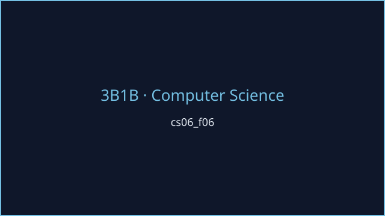

ডিজিটাল অর্থের সবচেয়ে বড় সমস্যা হলো—একই টাকা দুইবার খরচ করা। ডিজিটাল ফাইল তো কপি করা যায়। বিটকয়েন এই সমস্যার সমাধান করেছে কোনো কেন্দ্রীয় কর্তৃপক্ষ ছাড়াই।
কে বলবে কোন লেনদেন আগে এসেছে, আর কোনটি বাতিল? এর উত্তরই ব্লকচেইন।
হ্যাশ ফাংশন যেকোনো বার্তাকে একটি নির্দিষ্ট দৈর্ঘ্যের ''ডিজিটাল আঙুলের ছাপ'' দেয়। ইনপুটের সামান্য পরিবর্তনেও আউটপুট সম্পূর্ণ বদলে যায়, কিন্তু আউটপুট থেকে ইনপুট বের করা প্রায় অসম্ভব।
বিটকয়েনে SHA-256 হ্যাশ ব্যবহৃত হয়—প্রতিটি ব্লক তার আগের ব্লকের হ্যাশ ধারণ করে, ফলে পুরো শৃঙ্খল একটির সাথে অন্যটি আবদ্ধ।
প্রতি ব্যবহারকারীর একটি গোপন কী (Secret_key) থাকে, যা দিয়ে তিনি লেনদেনে ''স্বাক্ষর'' করেন। অন্যরা প্রকাশ্য কী (Public_key) দিয়ে সেই স্বাক্ষর যাচাই করতে পারেন—কিন্তু স্বাক্ষর থেকে গোপন কী বের করতে পারেন না।
নতুন ব্লক যোগ করতে মাইনারদের একটি কঠিন গাণিতিক পাজল সমাধান করতে হয়—একে বলা হয় প্রুফ-অফ-ওয়ার্ক। এতে কম্পিউটারের শক্তি খরচ হয়, তাই নতুন ব্লক তৈরি দামী; ফলে ইতিহাস বদলানোও দামী।
সবার কাছে পুরো শৃঙ্খলের কপি থাকে। কেউ ইতিহাস বদলালে অন্যরা সেই অসম্মত কপি প্রত্যাখ্যান করে। বিশ্বাস আসে ব্যাপক গণনার শক্তি থেকে।
যদি কোনো একক পক্ষ বিশ্বের অর্ধেকের বেশি কম্পিউটিং শক্তি দখল করে, তবে সে নিজের ইচ্ছামতো শৃঙ্খল বদলাতে পারে—একে ৫১% আক্রমণ বলে। বাস্তবে এত শক্তি সংগ্রহ করা অত্যন্ত ব্যয়বহুল।
বিটকয়েনের নিরাপত্তা আসে গণিত ও অর্থনীতির মিশ্রণ থেকে—কোনো একক ব্যক্তির উপর নির্ভরতা নয়।
নিচের ইন্টারেক্টিভ উপাদান ও কুইজের মাধ্যমে পাঠের ধারণা নিজে যাচাই করুন।
